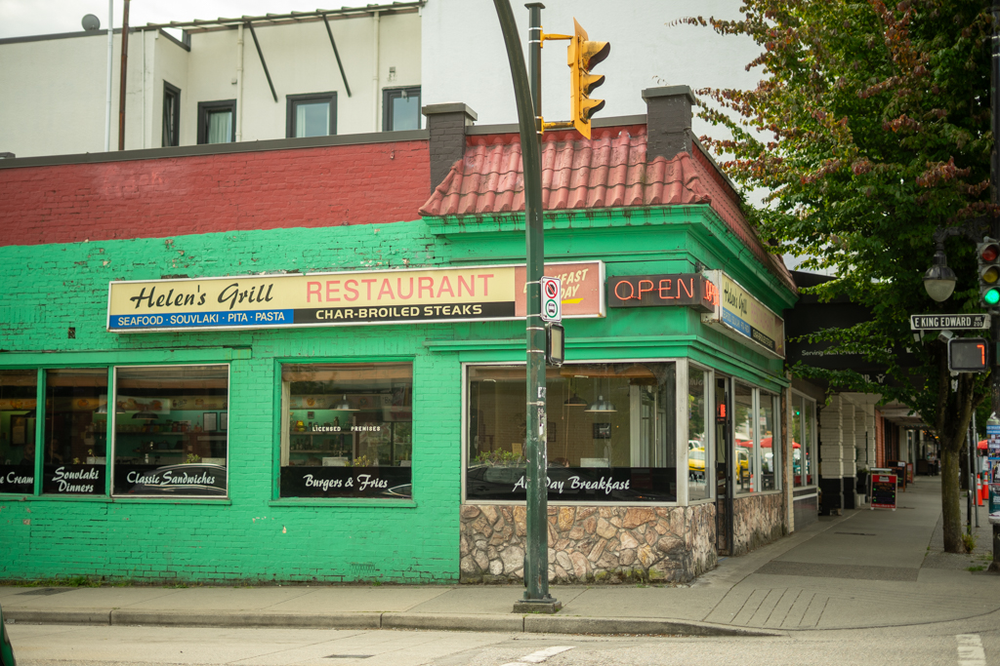

Helen's Grill
Main St

sit downbreakfastbrunchlunchdiner$fooddrinks43 min from Main Street–Science World
Helen's is a classic in the neighborhood, a great spot for breakfast, lunch, and early dinners. Serving all the standard breakfast and grill foods. Cash only!
My go-to: Pancakes or steak & eggs.
Main St · Mount Pleasant, Vancouver
$ · ~43 min walk from Main Street–Science World SkyTrain